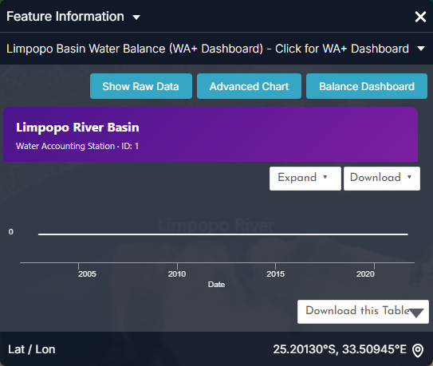
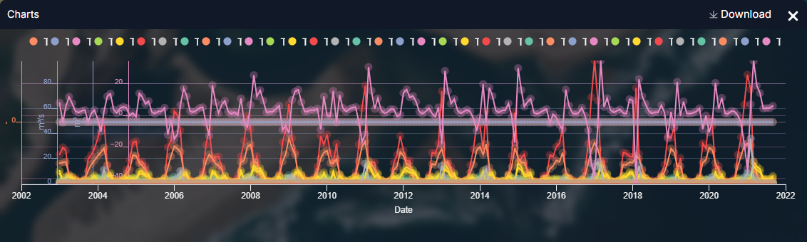
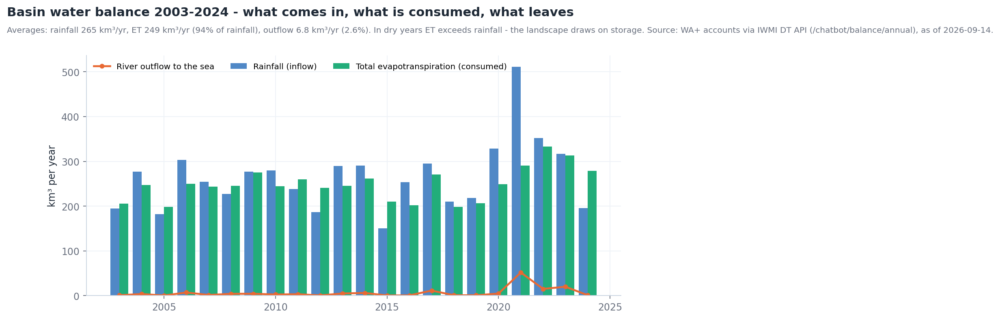
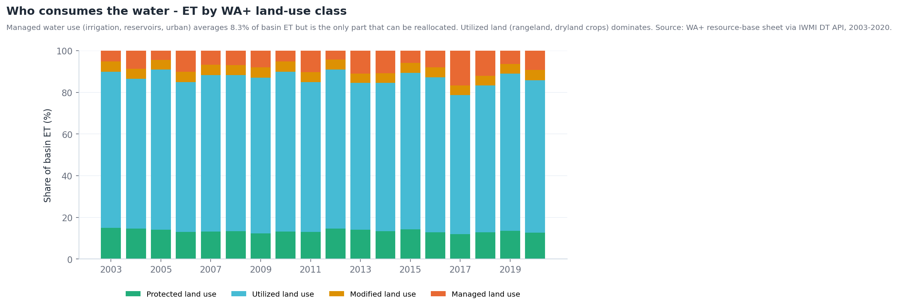
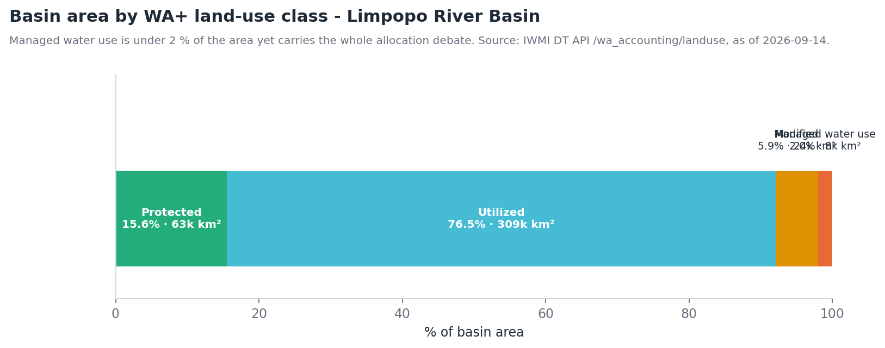

Contabilidade da água¶
A pergunta¶
Um planeador de bacia ou um analista da LIMCOM precisa de um balanço consistente da água da bacia: quanta chega como chuva, quanta sai por evaporação e transpiração, quanta escoa, quanta é consumida por cada setor, e como esse balanço está a mudar — a base de evidência para a repartição entre os quatro países ribeirinhos.
O portal segue o quadro Water Accounting Plus (WA+): uma folha de recursos-base (entradas, variação de armazenamento, ET da paisagem, escoamento utilizável) com a ET repartida por quatro classes de uso do solo — Protected, Utilized, Modified e Managed.
| Quem | Decisão | Frequência |
|---|---|---|
| Secretariado da LIMCOM e Grupo de Trabalho Técnico | Repartição à escala da bacia, reporte transfronteiriço | Contas anuais; revisão por ano hidrológico (out.–set.) |
| Planeadores nacionais (DWS, DWA, ZINWA, DNGRH) | Estratégias de reconciliação, tetos de licenciamento | Anual |
| Setores da irrigação e hidroeletricidade | Metas de eficiência, referências de produtividade da água | Sazonal |
| Investigadores e financiadores | Acompanhar mudanças e o impacto de intervenções | Plurianual |
Em resumo — contas WA+ 2003–2024
- Precipitação 265 km³/ano em média → ET 249 km³/ano (94 %) → escoamento para o mar 6,8 km³/ano (2,6 %).
- Amplitude: precipitação de 151 km³ (2015) a 511 km³ (2021); escoamento de 0,4 km³ (2005) a 52 km³ (2021).
- 2024: precipitação de 196 km³ contra ET de 278 km³ — a paisagem retirou 80 km³ do armazenamento.
- Uso do solo: Utilized 76,6 % da área, Protected 15,6 %, Modified 5,9 %, Managed water use 2,0 % (8 038 km²).
- O uso gerido consome ~8 % da ET da bacia — a única parcela que pode ser realocada.
Como se encadeia o fluxo de trabalho¶
flowchart TD
A[Entrada<br/>CHIRPS Historical Rainfall<br/>Rainfall Stations LIMIS] --> B[Consumo<br/>Evaporation · Transpiration · Interception Africa]
B --> C[Repartir por origem<br/>Blue ET Africa vs Green ET Africa]
C --> D[Produtividade<br/>Beneficial Fraction · ET Fraction · Evaporative Stress Index]
A --> E[Escoamento<br/>SWAT Incremental Contributions<br/>Mean Annual Runoff LIMIS]
E --> F[Armazenamento e transferências<br/>Dams & Reservoirs Basin Level Estimates<br/>Inter-basin Water Transfers LIMIS]
C --> G[Setores<br/>Irrigation Areas LIMIS · Hydropower Evaporation Footprint<br/>Water Use Time-series Polygon]
D & F & G --> H[Limpopo Basin Water Balance<br/>Painel WA+]
H --> I[Validar<br/>Water Balance Stations · Evaporation Stations LIMIS]
I --> J[Conta anual · Story]Dados a utilizar¶
| Termo do balanço | Conjunto de dados | Onde no catálogo |
|---|---|---|
| Entrada: precipitação | CHIRPS Historical Rainfall · Rainfall Stations (LIMIS) · Mean Annual Rainfall (LIMIS) · Number of Rainy Days | Natural Basin Characteristic → Climate; Water Use Monitoring and Analysis → Water Accounting |
| Saída: consumo | Evaporation Africa · Transpiration Africa · Interception Africa | Water Use Monitoring and Analysis → Water Accounting → Evapotranspiration & Water Use |
| Consumo por origem | Blue ET Africa (irrigação / água superficial e subterrânea) · Green ET Africa (chuva) | mesmo grupo |
| Produtividade do uso | Beneficial Fraction Africa · ET Fraction Africa · Evaporative Stress Index Africa | mesmo grupo |
| Saída: escoamento | Mean Annual Runoff (LIMIS) · Runoff Zones (LIMIS) · SWAT Incremental Contributions · Water Yield by Zone (LIMIS) | Climate; → Basin Water Balance |
| Procura | Water Requirements by Zone (LIMIS) · Hydropower Evaporation Footprint (Africa) · Power Plant Freshwater Demand (Africa) · Irrigation Areas (LIMIS) · Water Use Time-series (Irrigated Areas) (Polygon) | → Sectoral Demand; Water Resources; Water Use Monitoring and Analysis |
| Transferências, perdas e armazenamento | Inter-basin Water Transfers (LIMIS) · Transmission Losses (LIMIS) · Dams & Reservoirs Basin Level Estimates | Water Resources |
| Verdade de terreno | Water Balance Stations (LIMIS) · Evaporation Stations (LIMIS) · Streamflow Gauging Stations (LIMIS) · Surface Water Balance (LIMIS) | Water Resources → Streamflow Monitoring; Climate |
| As próprias contas | Limpopo Basin Water Balance (WA+ Dashboard) | Water Use Monitoring and Analysis → Water Accounting → Basin Water Balance — clique no marcador da bacia |
Percurso¶
- Enquadre o balanço. Explore data → adicione CHIRPS Historical Rainfall e Evaporation Africa. Coloque a linha temporal no mesmo mês em ambos. Chuva a entrar, evaporação a sair: onde a evaporação excede a chuva, a paisagem está a consumir armazenamento (a Figura 1 mostra-o à escala da bacia para 2024).
- Reparta o consumo. Substitua Evaporation por Blue ET Africa e Green ET Africa, usando Compare lado a lado. A ET azul é água que teve de ser fornecida — a parte gerida do balanço; a ET verde é chuva usada no local.
- Avalie a produtividade. Adicione Beneficial Fraction Africa. Consumo elevado com fração benéfica baixa é água perdida sem benefício — o primeiro lugar onde procurar poupanças.
- Siga o escoamento. Adicione SWAT Incremental Contributions e Mean Annual Runoff (LIMIS): que sub-bacias geram o rio, e como a contribuição modelada se compara com a média de longo prazo. Adicione Water Yield by Zone (LIMIS) e Water Requirements by Zone (LIMIS) para ver onde a procura excede o rendimento.
- Atribua setores. Adicione Irrigation Areas (LIMIS) e Hydropower Evaporation Footprint (Africa); para um número ao nível do perímetro, execute Water Use Time-series (Irrigated Areas) (Polygon) sobre o limite do perímetro.
- Contabilize transferências e armazenamento. Adicione Inter-basin Water Transfers (LIMIS), Transmission Losses (LIMIS) e Dams & Reservoirs Basin Level Estimates — a água que atravessa a fronteira, se perde em trânsito ou fica armazenada fecha o balanço.
- Verifique com estações. Adicione Water Balance Stations (LIMIS) e Evaporation Stations (LIMIS); clique numa estação para valores observados e valide os termos de satélite.
- Abra o painel WA+. Adicione Limpopo Basin Water Balance (WA+ Dashboard) e clique no marcador da bacia: as contas compiladas abrem como diagrama de Sankey (folha de recursos-base) com um CSV descarregável de cada termo por mês desde 2003.
- Guarde a vista montada como Story, uma cena por termo do balanço.
Interpretar os gráficos¶
As figuras abaixo são os gráficos do próprio portal, capturados no painel Feature Information (clique num elemento) e no painel Charts que abre com o botão Expand. Todos os gráficos de estações, barragens e locais seguem o mesmo padrão: um cartão-resumo, um gráfico de pré-visualização, Expand para ampliar, Download para o CSV. Os gráficos estão em inglês.


- Este marcador único é a porta de entrada das contas: Balance Dashboard para as folhas, Download para o CSV mensal de cada termo desde 2003.


- O painel traça todos os termos de uma vez, o que só é útil para ver o ritmo sazonal: a entrada de precipitação (rosa) atinge o pico cada verão; os termos de ET (amarelo/laranja) seguem um a dois meses depois.
- Desligue séries na legenda para isolar um termo — p. ex. mantenha Inflow Precipitation Rainfall e Outflow ET Landscape Utilized para ver que em verões secos a ET excede a chuva.
- Para análise use Download (uma coluna por termo) ou o Balance Dashboard; a secção recolhida abaixo mostra como ficam os totais anuais.

- O caudal observado nas estações da bacia é o termo de escoamento medido, não modelado; onde discorda do escoamento WA+, a conta precisa de ajuste.
Contexto de longo prazo (gráficos derivados dos mesmos dados da API)
Estes não são ecrãs do portal: foram gerados a partir das mesmas séries com tools/use_case_charts.py para mostrar como as séries do portal se comportam ao longo de décadas.






Indicadores e o que fazer¶
| Indicador | Onde | Leitura | Ação típica |
|---|---|---|---|
| Razão ET / precipitação (ano) | Painel WA+; Figura 1 | > 100 % | Ano de esvaziamento do armazenamento — esperar seca hidrológica na estação seguinte |
| Escoamento / precipitação | Painel WA+ | < 1 % | Ano de bacia fechada; sem margem para novas captações |
| Parcela de ET gerida | Folha 1 do painel WA+ | Tendência crescente com precipitação estável | Assinatura de sobre-repartição; rever licenças |
| Concentração de ET azul | Blue ET Africa | Focos fora das Irrigation Areas (LIMIS) registadas | Uso não licenciado — inspecionar |
| Fração benéfica | Beneficial Fraction Africa | Baixa sobre blocos irrigados | Alvo de programa de eficiência |
| Rendimento vs requisito | Water Yield by Zone vs Water Requirements by Zone (LIMIS) | Requisito > rendimento | Zona deficitária — transferências ou gestão da procura |
Exemplo prático — explicar a conta de 2024¶
- Abra o painel WA+ e selecione o ano hidrológico de 2024: precipitação 196 km³, ET 278 km³, escoamento 1,2 km³.
- Adicione CHIRPS Historical Rainfall para jan.–mar. 2024 e Evaporation Africa para os mesmos meses com Compare: o mapa de ET continua verde sobre o lowveld oriental e o Olifants irrigado enquanto a chuva é irregular — a ET foi sustentada por água armazenada.
- Adicione Blue ET Africa: brilhante sobre Loskop, os perímetros do Groot Letaba e Chókwè — a parcela gerida subiu porque a irrigação continuou durante o défice (a Figura 2 mostra o mesmo efeito em 2017).
- Adicione Dams & Reservoirs Basin Level Estimates para o final de 2024: o esvaziamento ao longo do ano é o termo de fecho (o declínio de Middle Letaba começa aqui — ver Monitorização de albufeiras).
- Adicione Water Requirements by Zone (LIMIS) e Water Yield by Zone (LIMIS): as zonas onde o requisito excede o rendimento são exatamente onde o défice de 2024 se fez sentir. Capture como Story — a conta, explicada em cinco mapas.
Lista de verificação da conta anual¶
- Ano hidrológico e data dos dados de cada termo indicados
- Precipitação, ET e escoamento (km³) com as razões ET/precipitação e escoamento/precipitação
- ET por classe de uso do solo e parcela gerida (azul)
- Variação de armazenamento (albufeiras) reconciliada com o residual
- Consumo setorial: irrigação (por perímetro quando possível), evaporação hidroelétrica, urbano
- Transferências de entrada / saída e perdas em trânsito
- Validação com Water Balance / Evaporation Stations
- Ligação da Story para o mapa montado
Limites a ter em conta¶
- Os produtos de ET à escala de África são saídas de modelo em resolução continental; são consistentes em toda a bacia (o que a contabilidade precisa) mas devem ser calibrados com estações antes de citados como volumes.
- As contas WA+ cobrem 2003–2024; o ano corrente só aparece quando o ano hidrológico fecha.
- Mean Annual Runoff (LIMIS) é uma média de longo prazo, não um valor atual.
- A captação de água subterrânea só é parcialmente visível (através da ET azul e das camadas de águas subterrâneas); uma conta completa precisa de dados de furos.
- O painel, o descarregamento CSV e o processo de séries temporais por polígono exigem sessão iniciada.
Relacionado¶
Uso de água na irrigação · Monitorização de albufeiras · Secas · Caudais ecológicos · Catálogo de Dados